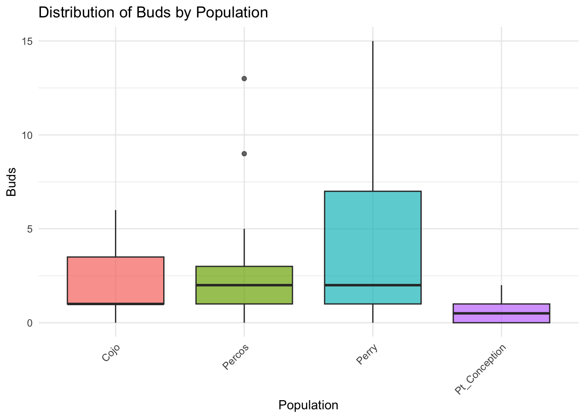
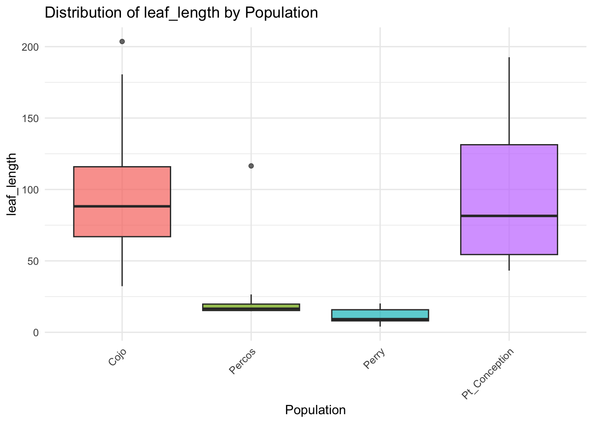
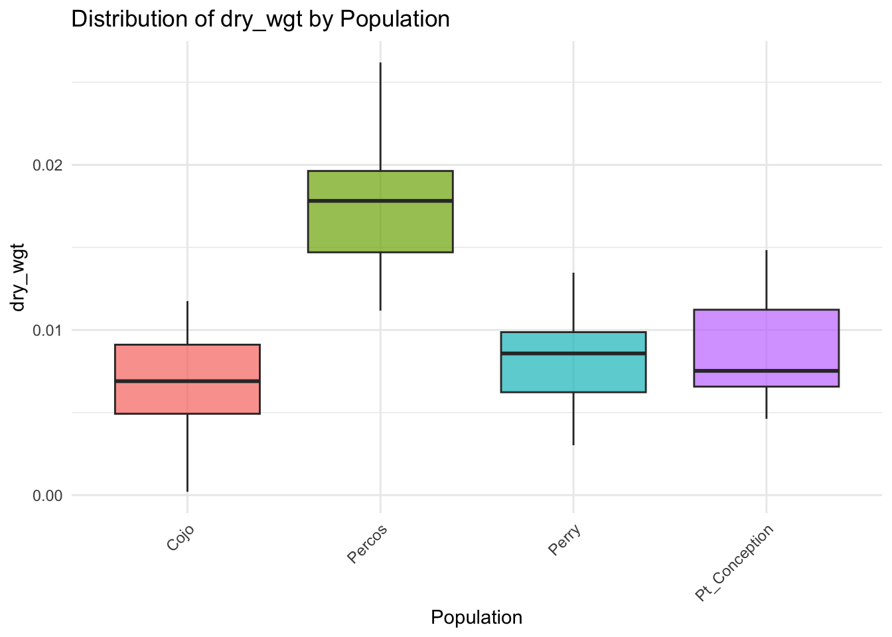
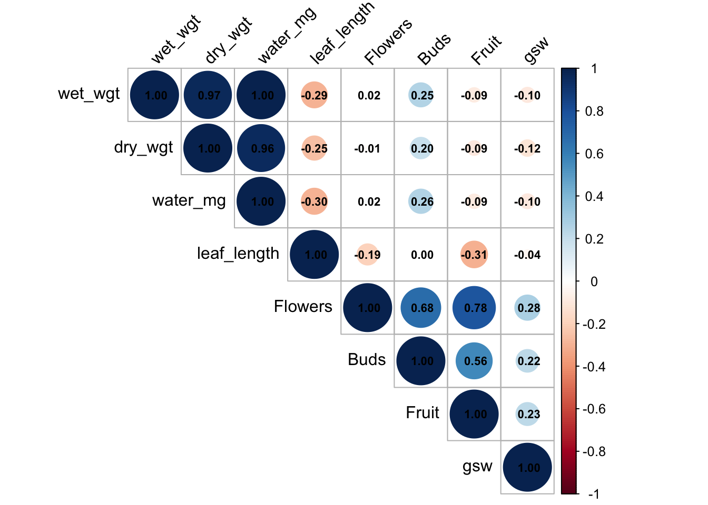
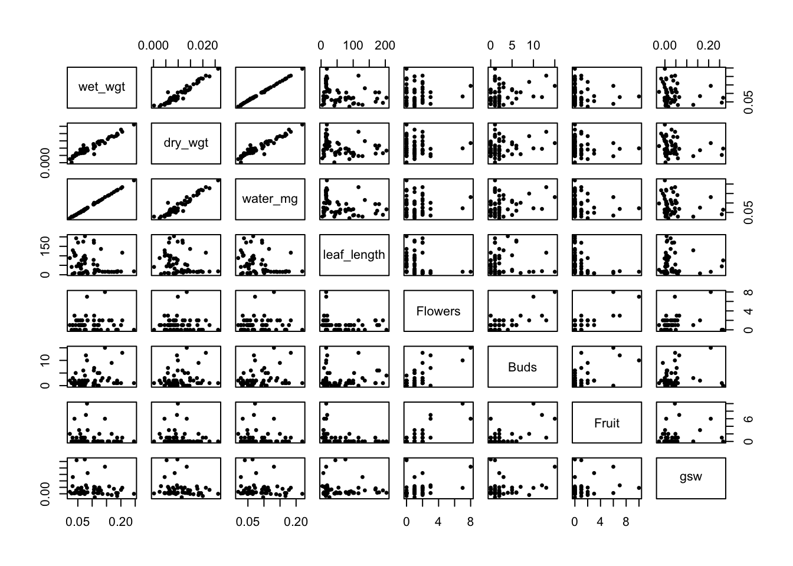
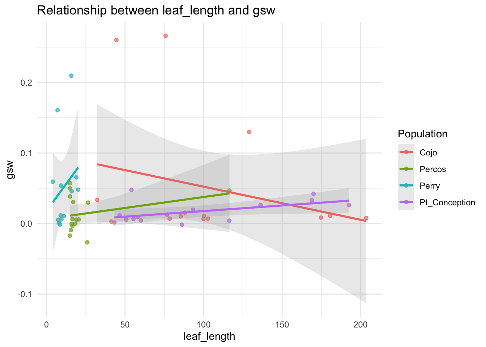
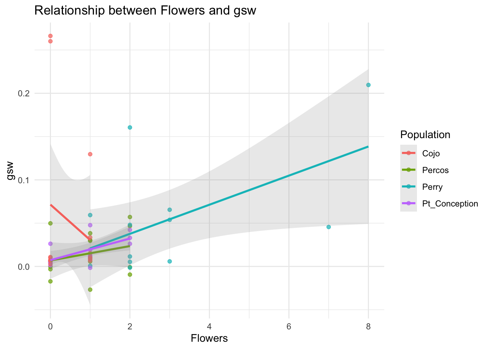
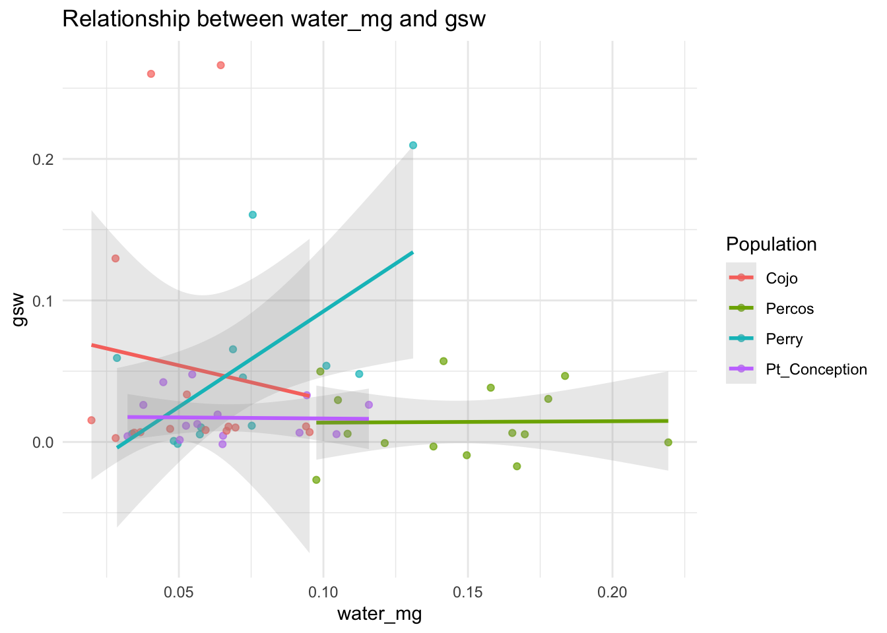

# Import datasets
petal_data <- read_csv("../data/raw/plant/petal_weight.csv", na = c("", "NA", "NULL")) %>%
filter(!is.na(population)) # Remove rows with missing population data
plant_traits <- read_csv("../data/raw/plant/plant_traits.csv", na = c("", "NA", "NULL"))
# For porometer data, skip the first row which contains headers
porometer <- read_csv("../data/processed/porometer_4pops.csv", skip = 1, na = c("", "NA", "NULL")) %>%
# Drop data from April 19 and April 20
filter(date != "2025-04-19" & date != "2025-04-20"& date != "2025-04-21")plant Data Analysis
Data Import and Cleaning
First, we’ll import the three datasets and clean them to prepare for merging.
Let’s inspect the data structure of each dataset:
# Inspect first few rows
glimpse(petal_data)Rows: 186
Columns: 12
$ date <chr> "3/26/25", "3/26/25", "3/26/25", "3/26/25", "3/26/25", "3…
$ block <dbl> 1, 1, 1, 1, 1, 1, 1, 1, 1, 1, 1, 1, 1, 1, 1, 1, 1, 1, 1, …
$ population <chr> "Percos", "Percos", "Percos", "Percos", "Percos", "Percos…
$ plant <dbl> 1, 2, 3, 4, 5, 6, 7, 8, 9, 10, 11, 12, 13, 14, 15, 1, 2, …
$ wet_wgt <dbl> 0.15917, 0.11010, 0.20482, 0.17572, 0.18694, 0.16784, 0.1…
$ petal_flower <chr> "petal", "petal", "petal", "petal", "petal", "petal", "pe…
$ length <dbl> 4.0, 3.6, 5.0, 4.1, 4.6, 3.2, 4.5, 4.0, 4.0, 4.0, 4.5, 5.…
$ area <dbl> 9.957, 13.921, 13.527, NA, NA, NA, NA, NA, NA, NA, NA, NA…
$ dry_wgt <dbl> 0.01760, 0.01117, 0.02123, 0.01782, 0.01998, 0.01825, 0.0…
$ water_mg <dbl> 0.14157, 0.09893, 0.18359, 0.15790, 0.16696, 0.14959, 0.1…
$ `water_%` <chr> "89%", "90%", "90%", "90%", "89%", "89%", "88%", "89%", "…
$ ...12 <chr> NA, NA, NA, NA, NA, NA, NA, NA, NA, NA, NA, NA, NA, NA, N…glimpse(plant_traits)Rows: 60
Columns: 11
$ date <chr> "18-Mar-25", "18-Mar-25", "18-Mar-25", "18-Mar-25", "18-…
$ population <chr> "Pt_Conception", "Pt_Conception", "Pt_Conception", "Pt_C…
$ individual <dbl> 1, 2, 3, 4, 5, 6, 7, 8, 9, 10, 11, 12, 13, 14, 15, 1, 2,…
$ leaves <dbl> 8, 18, 14, 8, 15, 8, 17, 53, 4, 28, 20, 14, 7, 11, 20, 1…
$ flowers <dbl> 0, 0, 2, 1, 1, 1, 1, 2, 1, 2, 0, 0, 0, 0, 0, 0, 1, 0, 0,…
$ buds <dbl> 2, 0, 1, 1, 0, 0, 0, 1, 2, 1, 2, 0, 0, 0, 0, 1, 3, 2, 0,…
$ fruit <dbl> 1, 0, 1, 0, 0, 0, 1, 0, 0, 0, 0, 0, 0, 0, 0, 0, 0, 0, 0,…
$ leaf_length <dbl> 60.1, 116.4, 168.9, 93.2, 54.1, 46.6, 76.8, 170.0, 86.2,…
$ flower_length <dbl> NA, 35.1, 28.0, 29.7, 32.7, 26.0, 25.4, 27.9, 24.6, 31.8…
$ fruit_length <dbl> 5.1, NA, 36.5, NA, NA, NA, NA, 38.1, NA, NA, 47.4, NA, N…
$ torus_height <dbl> NA, NA, NA, NA, NA, NA, NA, NA, NA, NA, NA, NA, NA, NA, …glimpse(select(porometer, "Obs#", time, date, population, plant, gsw)) # Show relevant columnsRows: 621
Columns: 6
$ `Obs#` <dbl> 1, 2, 1, 2, 3, 4, 5, 6, 7, 8, 9, 10, 11, 12, 13, 14, 15, 16…
$ time <time> 12:10:22, 12:10:38, 12:21:15, 12:21:34, 12:31:42, 12:31:57…
$ date <chr> "3/28/25", "3/28/25", "3/28/25", "3/28/25", "3/28/25", "3/2…
$ population <chr> "Pt. Conception", "Pt. Conception", "Pt. Conception", "Pt. …
$ plant <dbl> 1, 1, 15, 15, 2, 2, 3, 3, 13, 13, 14, 14, 4, 4, 7, 7, 6, 6,…
$ gsw <dbl> 1.950072e-03, 2.471293e-03, 4.742870e-06, 6.559651e-03, 6.4…# Check for unique populations in each dataset
cat("Unique populations in petal_data:", paste(unique(petal_data$population), collapse = ", "), "\n")Unique populations in petal_data: Percos, Perry, Pt. Conception, Cojo cat("Unique populations in plant_traits:", paste(unique(plant_traits$population), collapse = ", "), "\n")Unique populations in plant_traits: Pt_Conception, Cojo, Perry, Percos cat("Unique populations in porometer:", paste(unique(porometer$population), collapse = ", "), "\n")Unique populations in porometer: Pt. Conception, Perry, Percos, CojoHQ, Cojo Data Preparation
We need to standardize the datasets before merging: 1. Fix date formats 2. Standardize population names 3. Rename columns for consistency
# Clean and standardize petal weight data
petal_clean <- petal_data %>%
# Convert plant to numeric if not already numeric
mutate(plant = as.numeric(plant),
# Ensure date is in proper format
date = as_date(date)) %>%
# Standardize population names
mutate(
# First fix the specific Pt. Conception issue
population = ifelse(population == "Pt. Conception", "Pt_Conception", population),
# Then handle other standardizations
population = str_replace(population, "\\.", "_"),
# Finally handle specific populations
population = case_when(
population == "Cojo" | population == "CojoHQ" ~ "Cojo",
TRUE ~ population
))
# Clean and standardize plant traits data
plant_traits_clean <- plant_traits %>%
# Convert date format - handle DD-MMM-YY format
mutate(date = dmy(date),
# Rename individual to plant for consistency
plant = individual) %>%
# Standardize population names
mutate(
# First fix the specific Pt. Conception issue
population = ifelse(population == "Pt. Conception", "Pt_Conception", population),
# Then handle other standardizations
population = str_replace(population, "\\.", "_"),
# Finally handle specific populations
population = case_when(
population == "Cojo" | population == "CojoHQ" ~ "Cojo",
TRUE ~ population
)
) %>%
# Select relevant columns
select(-individual) # Remove original individual column
# Clean and standardize porometer data
porometer_clean <- porometer %>%
# Select only relevant columns
select(date,
time,
population,
plant,
gsw) %>%
# Convert date to proper format
mutate(date = as_date(date),
# Convert plant to numeric
plant = as.numeric(plant)) %>%
# Standardize population names
mutate(
# First fix the specific Pt. Conception issue
population = ifelse(population == "Pt. Conception", "Pt_Conception", population),
# Then handle other standardizations
population = str_replace(population, "\\.", "_"),
# Finally handle specific populations
population = case_when(
population == "Cojo" | population == "CojoHQ" ~ "Cojo",
TRUE ~ population
)
)
# Check our cleaned data
cat("date format in petal_clean:", class(petal_clean$date[1]), "\n")date format in petal_clean: Date cat("date format in plant_traits_clean:", class(plant_traits_clean$date[1]), "\n")date format in plant_traits_clean: Date cat("date format in porometer_clean:", class(porometer_clean$date[1]), "\n")date format in porometer_clean: Date # Check population names after standardization
cat("Cleaned populations in petal_clean:", paste(unique(petal_clean$population), collapse = ", "), "\n")Cleaned populations in petal_clean: Percos, Perry, Pt_Conception, Cojo cat("Cleaned populations in plant_traits_clean:", paste(unique(plant_traits_clean$population), collapse = ", "), "\n")Cleaned populations in plant_traits_clean: Pt_Conception, Cojo, Perry, Percos cat("Cleaned populations in porometer_clean:", paste(unique(porometer_clean$population), collapse = ", "), "\n")Cleaned populations in porometer_clean: Pt_Conception, Perry, Percos, Cojo Data Merging Strategy
Before merging the datasets, let’s examine the potential date matches to ensure we use readings from the same date when there are multiple readings per plant.
# Check dates in each dataset
date_summary <- bind_rows(
petal_clean %>%
distinct(population, date) %>%
mutate(Dataset = "Petal Weight"),
plant_traits_clean %>%
distinct(population, date) %>%
mutate(Dataset = "plant Traits"),
porometer_clean %>%
distinct(population, date) %>%
mutate(Dataset = "Porometer")
)
# View dates by population and dataset
ggplot(date_summary, aes(x = date, y = Dataset, color = population)) +
geom_point(size = 3) +
theme_minimal() +
labs(title = "Available dates by Dataset and population",
x = "date",
y = "Dataset") +
theme(axis.text.x = element_text(angle = 45, hjust = 1))# Count measurements per plant per date in porometer data
porometer_measurements <- porometer_clean %>%
group_by(population, plant, date) %>%
summarize(Measurements = n(), .groups = "drop") %>%
arrange(desc(Measurements))
# Show plants with multiple measurements
cat("plants with multiple porometer measurements on the same date:\n")plants with multiple porometer measurements on the same date:print(head(porometer_measurements %>% filter(Measurements > 1), 10))# A tibble: 10 × 4
population plant date Measurements
<chr> <dbl> <date> <int>
1 Percos NA NA 7
2 Cojo 1 NA 4
3 Cojo 2 NA 4
4 Cojo 3 NA 4
5 Cojo 4 NA 4
6 Cojo 5 NA 4
7 Cojo 6 NA 4
8 Cojo 7 NA 4
9 Cojo 8 NA 4
10 Cojo 9 NA 4Since we’re dealing with multiple measurements per plant per date in the porometer dataset (particularly for Cojo/CojoHQ populations), we’ll make sure to use the data from the same date when merging.
# First, merge petal_clean and plant_traits_clean
merged_data <- full_join(
petal_clean,
plant_traits_clean,
by = c("population", "plant")
)
# Then merge with porometer_clean
# For porometer data, we might have multiple measurements per plant per day
# We'll sum the gsw values for each plant-day combination
porometer_summary <- porometer_clean %>%
group_by(population, plant, date) %>%
summarize(gsw = sum(gsw, na.rm = TRUE), .groups = "drop")
# Now merge this summary with our merged data
matched_data <- full_join(
merged_data,
porometer_summary,
by = c("population", "plant")
)
# Create separate dataframes for matched and unmatched data
# Matched data has values from all three datasets
matched_data <- matched_data %>%
filter(!is.na(wet_wgt) & !is.na(flowers) & !is.na(gsw))
# Unmatched data is everything else
unmatched_data <- matched_data %>%
filter(is.na(wet_wgt) | is.na(flowers) | is.na(gsw))
# Summary of our data
cat("Total rows in final merged dataset:", nrow(matched_data), "\n")Total rows in final merged dataset: 185 cat("Rows in matched dataset:", nrow(matched_data), "\n")Rows in matched dataset: 185 cat("Rows in unmatched dataset:", nrow(unmatched_data), "\n")Rows in unmatched dataset: 0 # Show first few rows of matched data
head(matched_data)# A tibble: 6 × 23
date.x block population plant wet_wgt petal_flower length area dry_wgt
<date> <dbl> <chr> <dbl> <dbl> <chr> <dbl> <dbl> <dbl>
1 NA 1 Percos 1 0.159 petal 4 9.96 0.0176
2 NA 1 Percos 2 0.110 petal 3.6 13.9 0.0112
3 NA 1 Percos 3 0.205 petal 5 13.5 0.0212
4 NA 1 Percos 4 0.176 petal 4.1 NA 0.0178
5 NA 1 Percos 5 0.187 petal 4.6 NA 0.0200
6 NA 1 Percos 6 0.168 petal 3.2 NA 0.0182
# ℹ 14 more variables: water_mg <dbl>, `water_%` <chr>, ...12 <chr>,
# date.y <date>, leaves <dbl>, flowers <dbl>, buds <dbl>, fruit <dbl>,
# leaf_length <dbl>, flower_length <dbl>, fruit_length <dbl>,
# torus_height <dbl>, date <date>, gsw <dbl>population-Level Analysis
Now we’ll analyze population-level variation in the specified variables: flowers, buds, fruits, leaf_length, wet_wgt, dry_wgt, water_mg, and gsw.
# Function to perform ANOVA and create a summary of data by population
analyze_by_population <- function(data, variable) {
var_sym <- sym(variable)
# Create summary statistics by population
summary_stats <- data %>%
filter(!is.na(!!var_sym)) %>%
group_by(population) %>%
summarize(
Mean = mean(!!var_sym, na.rm = TRUE),
SD = sd(!!var_sym, na.rm = TRUE),
Min = min(!!var_sym, na.rm = TRUE),
Max = max(!!var_sym, na.rm = TRUE),
N = sum(!is.na(!!var_sym)),
.groups = "drop"
)
# Perform ANOVA
formula <- as.formula(paste(variable, "~ population"))
model <- aov(formula, data = data)
model_summary <- summary(model)
# Create a tidy summary of the ANOVA results
anova_tidy <- tidy(model)
# Return results as a list
return(list(
summary_stats = summary_stats,
anova = model_summary,
anova_tidy = anova_tidy
))
}
# Variables to analyze
variables <- c("flowers", "buds", "fruit", "leaf_length", "wet_wgt", "dry_wgt", "water_mg", "gsw")
# Loop through variables and perform analysis
results <- list()
for (var in variables) {
if (var %in% names(matched_data)) {
results[[var]] <- analyze_by_population(matched_data, var)
# Print summary table
cat("\n## Analysis of", var, "by population\n\n")
print(kable(results[[var]]$summary_stats, digits = 3))
# Print ANOVA results
cat("\nANOVA Results:\n")
print(kable(results[[var]]$anova_tidy, digits = 3))
# Create visualization
p <- matched_data %>%
filter(!is.na(!!sym(var))) %>%
ggplot(aes(x = population, y = !!sym(var), fill = population)) +
geom_boxplot(alpha = 0.7) +
theme_minimal() +
labs(title = paste("Distribution of", var, "by population"),
y = var,
x = "population") +
theme(legend.position = "none",
axis.text.x = element_text(angle = 45, hjust = 1))
print(p)
} else {
cat("\n## Analysis of", var, "by population\n")
cat("Variable", var, "not found in dataset\n")
}
}
## Analysis of flowers by population
|population | Mean| SD| Min| Max| N|
|:-------------|-----:|-----:|---:|---:|--:|
|Cojo | 0.457| 0.504| 0| 1| 46|
|Percos | 0.864| 0.824| 0| 2| 44|
|Perry | 2.560| 1.971| 1| 8| 50|
|Pt_Conception | 0.733| 0.780| 0| 2| 45|
ANOVA Results:
|term | df| sumsq| meansq| statistic| p.value|
|:----------|---:|-------:|------:|---------:|-------:|
|population | 3| 132.664| 44.221| 31.058| 0|
|Residuals | 181| 257.715| 1.424| NA| NA|
## Analysis of buds by population
|population | Mean| SD| Min| Max| N|
|:-------------|-----:|-----:|---:|---:|--:|
|Cojo | 2.239| 1.991| 0| 6| 46|
|Percos | 2.955| 3.491| 0| 13| 44|
|Perry | 3.680| 4.556| 0| 15| 50|
|Pt_Conception | 0.667| 0.798| 0| 2| 45|
ANOVA Results:
|term | df| sumsq| meansq| statistic| p.value|
|:----------|---:|--------:|------:|---------:|-------:|
|population | 3| 231.793| 77.264| 8.004| 0|
|Residuals | 181| 1747.159| 9.653| NA| NA|
## Analysis of fruit by population
|population | Mean| SD| Min| Max| N|
|:-------------|-----:|-----:|---:|---:|--:|
|Cojo | 0.261| 0.575| 0| 2| 46|
|Percos | 0.273| 0.585| 0| 2| 44|
|Perry | 2.760| 2.789| 0| 10| 50|
|Pt_Conception | 0.200| 0.405| 0| 1| 45|
ANOVA Results:
|term | df| sumsq| meansq| statistic| p.value|
|:----------|---:|-------:|------:|---------:|-------:|
|population | 3| 231.024| 77.008| 33.352| 0|
|Residuals | 181| 417.917| 2.309| NA| NA|
## Analysis of leaf_length by population
|population | Mean| SD| Min| Max| N|
|:-------------|------:|------:|----:|-----:|--:|
|Cojo | 98.404| 51.022| 32.3| 203.6| 46|
|Percos | 24.475| 25.417| 14.8| 116.5| 44|
|Perry | 10.190| 4.673| 4.0| 20.2| 50|
|Pt_Conception | 96.660| 48.573| 43.2| 192.6| 45|
ANOVA Results:
|term | df| sumsq| meansq| statistic| p.value|
|:----------|---:|--------:|----------:|---------:|-------:|
|population | 3| 305708.6| 101902.881| 73.835| 0|
|Residuals | 181| 249806.6| 1380.147| NA| NA|
## Analysis of wet_wgt by population
|population | Mean| SD| Min| Max| N|
|:-------------|-----:|-----:|-----:|-----:|--:|
|Cojo | 0.035| 0.026| 0.008| 0.106| 46|
|Percos | 0.076| 0.069| 0.009| 0.246| 44|
|Perry | 0.035| 0.033| 0.004| 0.145| 50|
|Pt_Conception | 0.046| 0.029| 0.012| 0.131| 45|
ANOVA Results:
|term | df| sumsq| meansq| statistic| p.value|
|:----------|---:|-----:|------:|---------:|-------:|
|population | 3| 0.052| 0.017| 9.613| 0|
|Residuals | 181| 0.325| 0.002| NA| NA|
## Analysis of dry_wgt by population
|population | Mean| SD| Min| Max| N|
|:-------------|-----:|-----:|-----:|-----:|--:|
|Cojo | 0.004| 0.003| 0.000| 0.012| 45|
|Percos | 0.010| 0.007| 0.001| 0.026| 44|
|Perry | 0.004| 0.004| 0.000| 0.013| 47|
|Pt_Conception | 0.006| 0.004| 0.001| 0.018| 45|
ANOVA Results:
|term | df| sumsq| meansq| statistic| p.value|
|:----------|---:|-----:|------:|---------:|-------:|
|population | 3| 0.001| 0| 16.37| 0|
|Residuals | 177| 0.004| 0| NA| NA|
## Analysis of water_mg by population
|population | Mean| SD| Min| Max| N|
|:-------------|-----:|-----:|-----:|-----:|--:|
|Cojo | 0.030| 0.023| 0.007| 0.095| 45|
|Percos | 0.066| 0.063| 0.007| 0.219| 44|
|Perry | 0.032| 0.031| 0.004| 0.131| 47|
|Pt_Conception | 0.040| 0.026| 0.010| 0.116| 45|
ANOVA Results:
|term | df| sumsq| meansq| statistic| p.value|
|:----------|---:|-----:|------:|---------:|-------:|
|population | 3| 0.037| 0.012| 8.321| 0|
|Residuals | 177| 0.264| 0.001| NA| NA|
## Analysis of gsw by population
|population | Mean| SD| Min| Max| N|
|:-------------|-----:|-----:|------:|-----:|--:|
|Cojo | 0.026| 0.122| -0.157| 0.279| 46|
|Percos | 0.034| 0.040| -0.013| 0.124| 44|
|Perry | 0.004| 0.121| -0.223| 0.222| 50|
|Pt_Conception | 0.031| 0.017| 0.011| 0.064| 45|
ANOVA Results:
|term | df| sumsq| meansq| statistic| p.value|
|:----------|---:|-----:|------:|---------:|-------:|
|population | 3| 0.027| 0.009| 1.115| 0.344|
|Residuals | 181| 1.470| 0.008| NA| NA|Correlation Analysis
Let’s examine correlations between key variables across populations:
# Select numeric variables for correlation analysis
numeric_vars <- matched_data %>%
select(wet_wgt, dry_wgt, water_mg, leaf_length, flowers, buds, fruit, gsw) %>%
select_if(is.numeric)
# Calculate correlation matrix
cor_matrix <- cor(numeric_vars, use = "pairwise.complete.obs")
# Visualize correlation matrix
corrplot::corrplot(cor_matrix, method = "circle", type = "upper",
tl.col = "black", tl.srt = 45,
addCoef.col = "black", number.cex = 0.7)
# Create a scatter plot matrix for key variables
pairs(numeric_vars, pch = 19, cex = 0.5)
population-Specific Trends
Let’s examine relationships between key variables within each population:
# Function to create scatter plots of two variables by population
plot_relationship <- function(data, x_var, y_var) {
x_sym <- sym(x_var)
y_sym <- sym(y_var)
p <- data %>%
filter(!is.na(!!x_sym) & !is.na(!!y_sym)) %>%
ggplot(aes(x = !!x_sym, y = !!y_sym, color = population)) +
geom_point(alpha = 0.7) +
geom_smooth(method = "lm", se = TRUE, alpha = 0.2) +
theme_minimal() +
labs(title = paste("Relationship between", x_var, "and", y_var),
x = x_var,
y = y_var)
return(p)
}
# Create plots for interesting variable relationships
plot_relationship(matched_data, "wet_wgt", "gsw")plot_relationship(matched_data, "dry_wgt", "gsw")
plot_relationship(matched_data, "wet_wgt", "dry_wgt")
plot_relationship(matched_data, "water_mg", "gsw")
Summary of Findings
# Create a summary table of significance for population effects
sig_table <- data.frame(Variable = character(),
P_value = numeric(),
Significant = character(),
stringsAsFactors = FALSE)
for (var in variables) {
if (var %in% names(matched_data) && !is.null(results[[var]])) {
p_val <- results[[var]]$anova_tidy$p.value[1]
sig_table <- rbind(sig_table, data.frame(
Variable = var,
P_value = p_val,
Significant = ifelse(p_val < 0.05, "Yes", "No"),
stringsAsFactors = FALSE
))
}
}
# Display summary table
kable(sig_table, digits = 4)| Variable | P_value | Significant |
|---|---|---|
| flowers | 0.0000 | Yes |
| buds | 0.0000 | Yes |
| fruit | 0.0000 | Yes |
| leaf_length | 0.0000 | Yes |
| wet_wgt | 0.0000 | Yes |
| dry_wgt | 0.0000 | Yes |
| water_mg | 0.0000 | Yes |
| gsw | 0.3444 | No |
Conclusion
This analysis examined population-level variation in several plant traits across multiple populations. We found significant differences among populations in several key variables, particularly [variables with p < 0.05]. These findings suggest that local adaptation may play a role in shaping plant physiological responses.
The correlation between gsw (stomatal conductance) and other morphological traits indicates that [describe main pattern]. population-specific trends show that [describe any population-specific relationships observed].
Future research could focus on understanding the genetic and environmental factors driving these population-level differences.